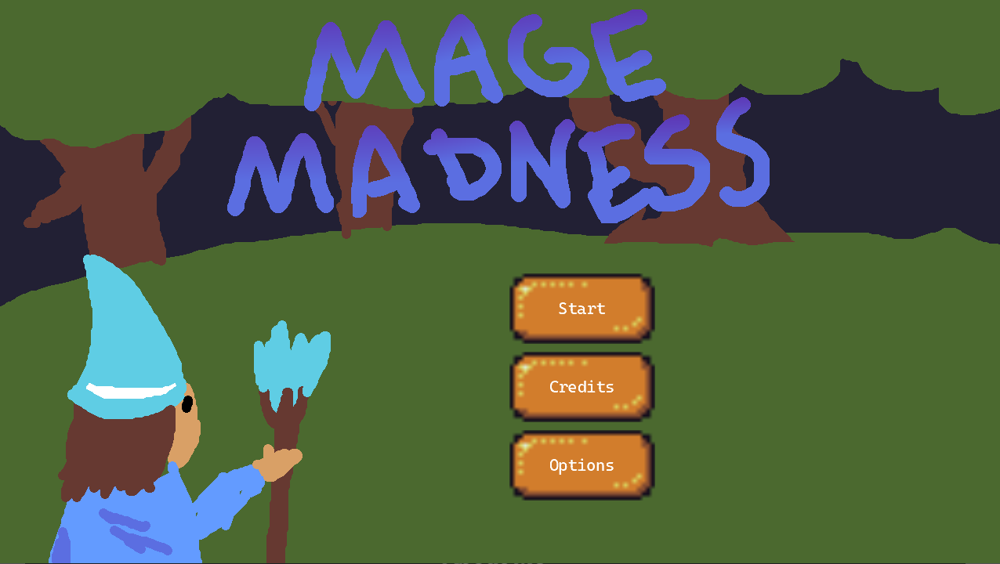
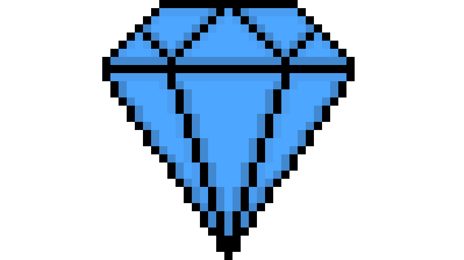
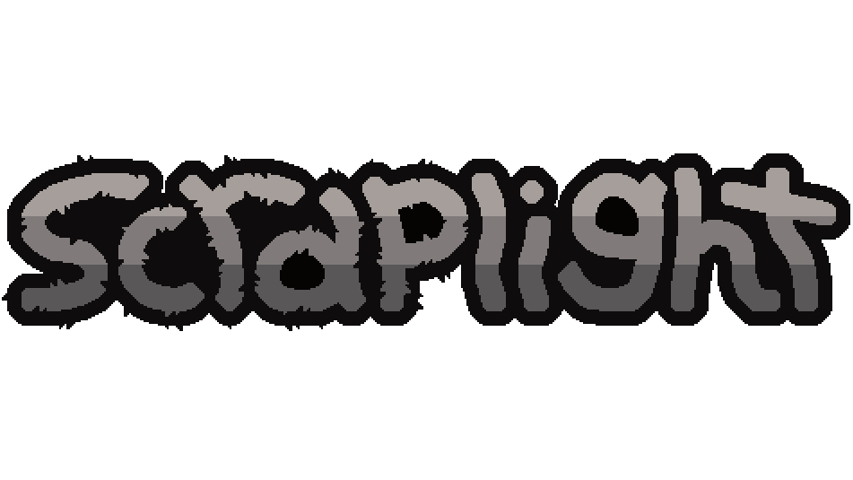
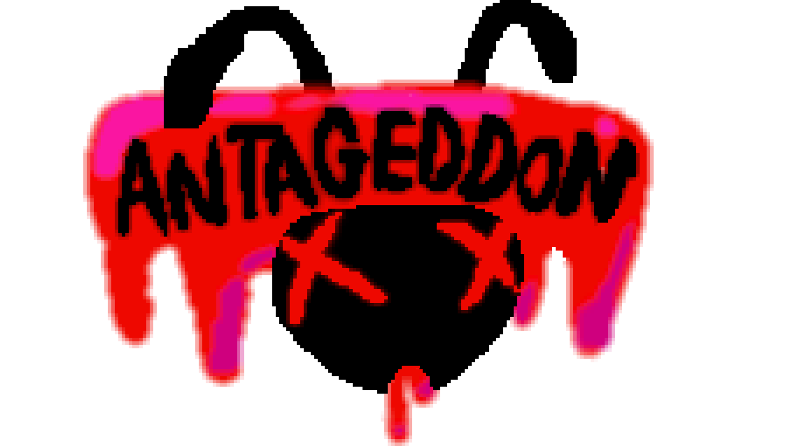
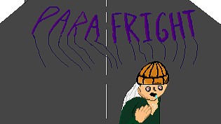
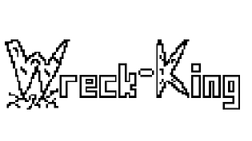

About Me
I am a third-year student in the Rochester Institute of Technology's Game Design and Development program. In my time here at RIT I have learned about many different aspects of game design and development. I have learned about programming games mainly in Unity using C#, but also using C++ and JavaScript. I have learned about some of the art aspects of game development as well, with 2D and 3D animation and asset production.
Outside of classes, I've been involved in a number of game jams, each time focusing on practicing a specific skill or tool. In this manner, I've been able to learn another game engine, Godot, as well as been able to improve my game art skills.
LinkedInClass Projects
Mage Madness

Class: Game Development and Algorithmic Problem Solving II
Spring 2024
Created by four person team Overwhelmingly Negative as our first project together for a
class.
As a semester long project, we were required to create a game using Monogame that fit the theme
of "just a stick". We decided to follow this theme by creating a game that could theoretically
be played using just a joystick. We created an autoshooter in which the player has to survive
waves of squirrels attacking them by moving and avoiding them while the mage automatically
shoots at the nearest squirrel.
With this being our first game we created, we did not split up our contibutions significantly.
Everyone worked a little bit on every part of the project, from finding assets to programming
the main elements of the game, I, as well as the rest of the group, was involved in it
all.
Check out our Itch page here: Mage Madness
Diamond Heist

Class: Intro to Game Web Tech
Fall 2024
Created by myself as a final project for a class.
For a final project, using Pixijs and JavaScript, I created a game about stealing diamonds from
a museum while trying to avoid tripping any laser sensors. For this game, I created all of the
assets except for the font. I made the pixel art, animations, and created the sound effects
using jsfxr.
For this project, we were also required to make a webpage including instructions, documentation,
credits, and the initial proposal for the project. I was able to create these pages thanks to
the HTML and CSS skills I learned in this class.
Check out the game's page here: Diamond Heist
Scraplight

Class: Game Design and Development II
Fall 2025
Created by team 5 Devs in a Trenchcoat
As a semester long project, we created a game about avoiding a light-seeking monster while
trying to escape a factory. Created in Unity 3D, we had a big focus on the lighting and
atmosphere of our game, as well as making a monster that felt scary without being too
strong. The player is given multiple options for avoiding the killer, like toggling their
flashlight, throwing flares, or using other lights in the environment, as well as the
ability to find keys to unlock doors, opening more areas for the player to explore.
This class had a major focus on being as similar to a real-world game development as
possible. We each had roles on our team, used Jira to help manage our project, and organized
our work progress into multiple sprints over the course of the semester. I was one of two
main programmers on the team, working across many aspects of our game like player and camera
movement, interactable items like flares, keys, and doors, as well as the UI elements of our
game, like the HUD, pausing, and all the different screens the player might see. My biggest
contribution, and the one I am most proud of, is the monster AI. I created the monster and
programmed all of its behaviors, having it react to lights, searching for the player, and
having multiple different behavior states that it transitions through depending on the
environment surrounding it.
Check out our itch.io page here: Scraplight
Personal Projects
Dude Shoot'em: Relocated

RIT X Granola.gg Game Jam
October 2024
Created by team Overwhelmingly Negative for our first ever game jam.
As our first game jam, we had less than 48 hours to make a game fitting the theme "nostalgia".
We decided to follow this theme by creating a game similar to another game from the 80s called
Contra. The game followed an 80s action hero named "John Dude" as he gets relocated into
the medieval times with his machine gun and has to defend against the people of the time who
hunt him down for witchcraft.
Because this was our first game jam, we were somewhat disorganized and did not focus on specific
roles. Each member of the group worked on all parts of the game, from designing it to
programming it. This project taught us a lot about developing games, especially under tough time
pressure.
Check out our Itch page here: Dude Shoot'em: Relocated
Antageddon

RIT Game Developers Club x Drawing Club Spring 2025 Game Jam
March 2025
Created alongside Jefferson Goehring from team Overwhelmingly Negative.
For this jam, we were given less than 48 hours to make a game fitting the theme "crush". Our
game, Antageddon, follows a man trying to defend his food from an ant infestation. The player
must drag around foods while clicking on ants to crush them.
Since this jam was done only as a partnership, both Jeff and I worked on programming together.
He had more of a focus on the programming, however, while I worked on some programming as well
as finding our assets
Check out our Itch page here: Antageddon
Parafright

RIT Game Developers Club Halloween 2025 Game Jam
October 2025
Created by team Overwhelmingly Negative.
For this game jam, we were given the theme "shared possesion" and less than 48 hours to make a
game following that theme. For "shared possession", we created a game where you play as a man
who must fight for control of his brain from a parasite. The player has to collect enough money
to enter the hospital and get the parasite removed, they can also pick up meds to slow down the
parasite's infection progress.
This jam was the first that we created all of the assets for rather than finding assets online.
I was one of the two programmers, coding parts of the game like the obstacles, collectibles, and
more while also creating a number of the art assets like the main sprite animation,
collectibles, and other sprites.
Check out our Itch page here: Parafright
Wreck-King

Roll Your Fate Game Jam
November 2025
Created by my brother, David Poore, and I.
Given the chance to roll multiple dice to determine what the criteria would be for our game, we
rolled the theme "time is a resource", the adventure genre, one button input type, and black and
white art style. To fit these criteria, we created a game in which the player must launch
themselves as a wrecking ball into buildings and obstacles to try to destroy them within a
certain time limit. The space bar is the only button used throughout the game, even for
navigating menus.
For this jam, both of us split up the work pretty evenly, him focusing on the player controlling
and level design and me focusing on obstacles, menu navigation, and art. For this jam, we once
again did all of the asset production which I drew all of the art for.
Check out our Itch page here: Wreck-King